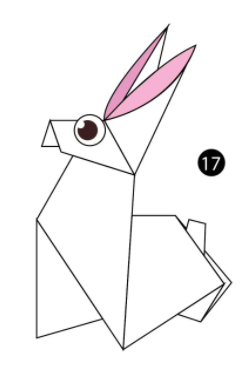
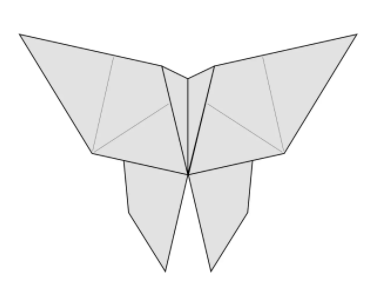

Chameleon origami
CHAMELEON
Interesting Facts about Chameleon
- Chameleons feet work like salad tongs.
- Skin crystales enable chameleon to change color at will.
- Chameleons eyes can swivel around in two different DIRECTIONS simuntaneously.

Camel origami
CAMEL
Interesting Facts about Camel
- Camels have three sets of eyelids and two rows of eyelashes to keep sand out of their eyes.
- Camels have thick lips which let them forage for thorny plants other animals can't eat.
- Their humps let them store up to 80 pounds of fat which they can live off for weeks and even months!

Cicadas origami
CICADA
Interesting Facts about cicada
- Cicadas make noise like toy frogs
- Cicadas are like tiny violins
- Cicadas underground builders

Panda origami
PANDA
Interesting Facts about Panda
- A giant panda is much bigger than your teddy bear.
- Giant pandas are good at climbing trees and can also swim.
- Pandas go from pink to white and black (or brown).

Pigeon origami
PIGEON
Interesting Facts about Pigeon
- They might be the first domesticated bird.
- They can find their way back to the nest from 1300 miles away.
- Pigeons produce fake "milk."

Teddy origami
BEAR
Interesting Facts about Teddy
- Bears eat mostly meat and fish, but some bears also eat plants and insects.
- Black bears can run at the speed up to 35mph.
- Most bears have 42 teeth.
Crocodile origami
CROCODILE
Interesting Facts about crocodile
- They are the biggest reptiles on Earth.
- Crocodiles are closely related to dinosaurs and birds.
- They have a good night vision.
Fox origami
FOX
Interesting Facts about fox
- Foxes make 40 different sounds.
- Foxes are extremely playful.
- Foxes live in underground dens.

Rabbit origami
RABBIT
Interesting Facts about rabbit
- Rabbits vision covers nearly 360 degrees.
- Rabbits are really good jumpers.
- Rabbits teeth never start growing.
Horse origami
HORSE
Interesting Facts about horse
- Horses can sleep both lying down and standing up.
- Horses have around 205 bones in their skeleton.
- Horses can run shortly after birth.
Frog origami
FROG
Interesting Facts about frog
- There are over 5,000 species of frog.
- Frogs don't need to drink water as they absorb it through their skin.
- Frogs have long back legs and webbed feet for jumping and swimming.

Butterfly origami
BUTTERFLY
Interesting Facts about butterfly
- Butterfly wings are transparent.
- Butterflies use their feet to taste.
- Butterflies only live for a few weeks.
Parrot origami
PARROT
Interesting Facts about parrot
- There Are Around 393 Species of Parrots.
- Parrots Eat With Their Feet.
- Most Parrots Can Imitate Sound.
Owl origami
OWL
Interesting Facts about owl
- Owls have super-powered hearings.
- Owls flight is silent.
- Owls can turn there head almost the way round.
Swan origami
SWAN
Interesting Facts about swan
- There are six different species of swans.
- The swan has over 25,000 feathers in its body.
- Swans can fly as fast as 60 miles per hour.